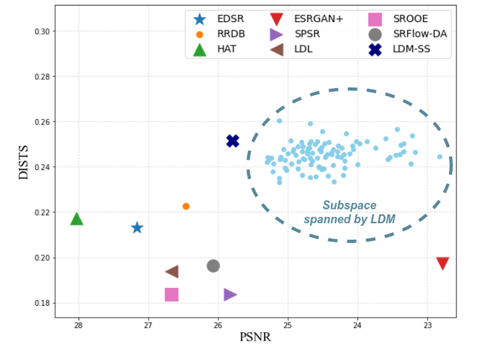

Resolving Ambiguity in Image Super-resolution via Diffusion Models and Human Feedback
Authors: Cansu Korkmaz, Ege Cirakman, A. Murat Tekalp, Zafer Dogan
Venue: IEEE International Conference on Image Processing (ICIP) 2024, Abu Dhabi, UAE, 27-30 October 2024
Overview
This paper presents a novel approach to resolve ambiguity in image super-resolution by combining diffusion models with human feedback mechanisms. The method leverages the generative capabilities of diffusion models while incorporating human preferences to guide the super-resolution process, leading to more accurate and perceptually pleasing results that align with user expectations.
Key Contributions
- Human feedback integration in diffusion-based super-resolution
- Ambiguity resolution framework
- Improved perceptual quality and user satisfaction